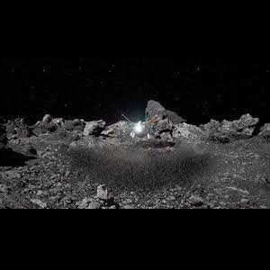

OSIRIS-Rex, Origins, Spectral Interpretation, Resource Identification, and Security – Regolith Explorer, originally launched on the 8th of September 2016, reaching the asteroid Bennu on the 3rd of December. It dropped the samples on the 24th of September 2023 in a desert in Utah. The spacecraft didn’t land but left for asteroid Apophis. The samples were carefully moved to Johnson Space Centre, NASA.
While not all of the sample has been measured, researchers estimate that it’s about 250 grams, far higher than the original goal of 60g. It was so much that the collection mechanism got clogged!

While the samples are not far along in the analysis process, the samples are already very promising. The first look shows that the asteroid is rich in water and carbon-containing compounds. Scientists think asteroids like Bennu might be where Earth’s water came from, as well as where all life may have originated from.
"Almost everything we do at NASA seeks to answer questions about who we are and where we come from. NASA missions like OSIRIS-REx will improve our understanding of asteroids that could threaten Earth while giving us a glimpse into what lies beyond. The sample has made it back to Earth, but there is still so much science to come — science like we've never seen before." (Wall, 2023) said NASA Administrator Bill Nelson in a statement.
The sample is still under study. There is much more to be discovered, and scientist are excited to find these secrets.
< Back to Homepage